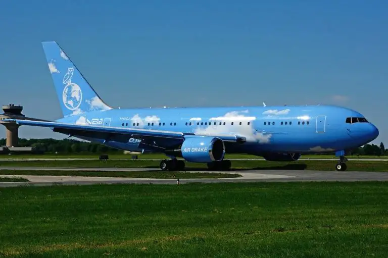
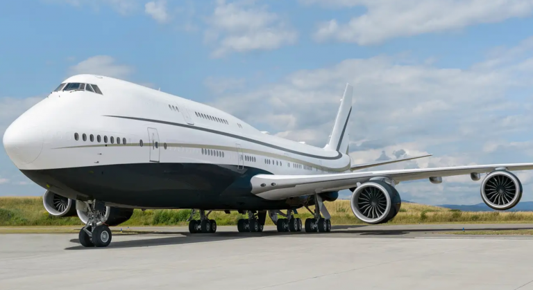

The Top 5 Largest Private Jets In The World
A look at the largest private aircraft across the globe.

Traveling on your own private jet is one of the ultimate symbols of wealth and status, not to mention a supremely comfortable mode of navigating the globe. While most private jets are of the single-aisle variety, a select few super-rich individuals can afford to shell out on (and pay the upkeep for) a widebody aircraft all of their own. Let's take a look at the largest private aircraft in the world.
5. Drake's private Boeing 767-200
Canadian rapper Drake acquired his very own Boeing 767-200ER early in 2019. Well, it is not exactly owned by Drake. Rather, it belongs to Ontario-based Cargojet. The plane is a free-publicity deal for the airfreight company, and why not, if you have a plane or two to spare? Who foots the fuel bill remains a little unclear.

Meanwhile, that is not to say that the aircraft has not been outfitted in style, with plush velvet sofas rather than stiff seats, a fully carpeted floor, gold and wood surfaces, a full-mirror wall, an entertainment room, and three fully-enclosed private suits. Introduced with Mid East Jet in October 1996, registration N767CJ is more commonly known as Air Drake.
In the summer of 2022, Drake came under fire after his jet made multiple trips between Hamilton and Toronto lasting just 15 minutes. With many believing the rapper himself was onboard, Drake later came out to clarify that the aircraft was just being moved and no passengers were onboard - nonetheless, the brief flights are said to have emitted around 15 tons of carbon dioxide.
4. Roman Abramovich's Boeing 787-8
Former Chelsea owner and Russian oligarch Roman Abramovich used to travel on a Boeing 767-33AER nicknamed 'Bandit' due to a feature of the livery with black slanted stripes around the cockpit windows. Abramovich picked up the jet, originally intended for Hawaiian Airlines which ended up canceling the order, in 2004.
It has reportedly been fitted with a banquet hall that can accommodate 30 people, a full-service kitchen capable of conjuring up gourmet fare, and gold-gilded bathrooms. Moreover, it has the same anti-ballistic missile system as the US presidential aircraft Air Force One.

Meanwhile, that is not to say that the aircraft has not been outfitted in style, with plush velvet sofas rather than stiff seats, a fully carpeted floor, gold and wood surfaces, a full-mirror wall, an entertainment room, and three fully-enclosed private suits. Introduced with Mid East Jet in October 1996, registration N767CJ is more commonly known as Air Drake.
In the summer of 2022, Drake came under fire after his jet made multiple trips between Hamilton and Toronto lasting just 15 minutes. With many believing the rapper himself was onboard, Drake later came out to clarify that the aircraft was just being moved and no passengers were onboard - nonetheless, the brief flights are said to have emitted around 15 tons of carbon dioxide.
3. Alisher Usmanov's Airbus A340
The largest private jet in the Russian Federation does not belong to Vladimir Putin, who in his indefinite presidential capacity flies a heavily modified version of an Ilyushin Il-96. It belongs instead to Uzbek-born Alisher Bourkanovich Usmanov.
The oligarch's Airbus A340-300 (registration: M-IABU) is approaching 15 years old and was delivered to Usmanov in October 2008. It was operated on his behalf by Margaux Aviation after 12 years with Global Jet Luxembourg, previously known as Silver Arrows, before its current operator Klaret Aviation took over in December 2021. According to Planespotters.net, the jet has been in storage at Tashkent International Airport (TAS) since February 2022 after Usmanov was sanctioned and had his assets frozen.

The plane has been named after Usmanov's father and has 'Bourkhan' lettered on the front part of the fuselage. Its owner has reportedly customized the plane to reach a value of US$450 million. The interior features the usual widebody VIP extravaganzas such as a dining area, king-size beds, and luxurious leather seats. Meanwhile, true to proper Russian oligarch form, Usmanov's A340 also has a nightclub area. With a range of 7,300 NM (13,400 km), you could party all the way from Moscow to Lima or Los Angeles.
Meanwhile, true to proper Russian oligarch form, Usmanov's A340 also has a nightclub area. With a range of 7,300 NM (13,400 km), you could party all the way from Moscow to Lima or Los Angeles.
2. Prince Al Waleed bin Talal's private 747-400
The world's second-largest private jet, a Boeing 747-400, belongs to Prince Al Waleed bin Talal. Ranked number 45 on Forbes' list of the wealthiest people in the world in 2017, the Saudi Arabian royal and investor owns chunks of companies across the US, Europe, and the Middle East.

When the Prince bought the plane in 2003, it still had 400 passenger seats fitted. These were torn out to make way for a dining room for 14 people, two luxurious double bedrooms, and, because why not, a golden throne in the middle of the cabin. The jet is reportedly serviced by 11 flight attendants.
1. Joseph Lau's private 747-8 VIP
The biggest private jet in the world belongs to Hong Kong real estate tycoon Joseph Lau, who boasts an estimated net worth exceeding $13 billion. The longest and second-largest commercial aircraft ever built has a 445 square meter interior and, on Lau's version, its two levels are connected by a spiral staircase. The initial outlay reportedly set Lau back $367 million, with modifications adding another $153 million to the bill.

While the specifics of the interior are kept under wraps, the Boeing 747-8 reportedly features a lavish office space, several guest rooms, vaulted ceilings, as well as an onboard gym. An actual workout certainly beats walking up and down the aisle to keep circulation flowing on transpacific long-haul flights to help combat jet lag.
One of the richest people on the planet, the Sultan of Brunei, also gets about in a 747-8 VIP. However, the 10-year-old quadjet with registration V8-BHK officially belongs to the Government of Brunei, and as such, we have chosen not to include it. The aircraft replaced the previous transportation of the Sultan, a 747-400, in 2016.